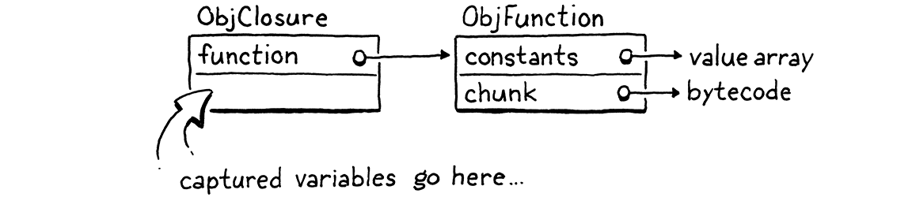

Closures
This book is a work in progress!
×If you see a mistake, find something unclear, or have a suggestion, please let me know. To follow its progress, please join the mailing list:
(I post about once a month. Don’t worry, I won’t spam you.)
As the man said, for every complex problem there’s a simple solution, and it’s wrong.
Umberto Eco, Foucault’s Pendulum
Thanks to our diligent labor in the last chapter, we have a virtual machine with working functions. What it lacks is closures. Aside from global variables, which are their own breed of animal, a function has no way to reference a variable declared outside of its own body.
var x = "global"; fun outer() { var x = "outer"; fun inner() { print x; } inner(); } outer();
Run this example now and it prints “global”. It’s supposed to print “outer”. To fix this, we need to include the entire lexical scope of all surrounding functions when resolving a variable.
This problem is harder in clox than it was in jlox because our bytecode VM stores locals on a stack. We used a stack because I claimed locals have stack semantics—variables are discarded in the reverse order that they are created. But with closures, that’s only mostly true.
fun makeClosure() { var local = "local"; fun closure() { print local; } return closure; } var closure = makeClosure(); closure();
The outer function makeClosure() declares a variable, local. It also creates
an inner function, closure() that captures that variable. Then makeClosure()
returns a reference to that function. Since the closure escapes while holding on to the local variable, local must
outlive the function call where it was created.
We could solve this problem by dynamically allocating memory for all local variables. That’s what jlox does by putting everything in those Environment objects that float around in Java’s heap. But we don’t want to. Using a stack is really fast. Most local variables are not captured by closures and do have stack semantics. It would suck to make all of those slower for the benefit of the rare local that is captured.
This means a more complex approach than we used in our Java interpreter. Because some locals have very different lifetimes, we will have two implementation strategies. For locals that aren’t used in closures, we’ll keep them just as they are on the stack. When a local is captured by a closure, we’ll adopt another solution that lifts them onto the heap where they can live as long as needed.
Closures have been around since the early Lisp days when bytes of memory and CPU cycles were more precious than emeralds. Over the intervening decades, hackers devised all manner of ways to compile closures to optimized runtime representations. Some are more efficient but require a more complex compilation process than we could easily retrofit into clox.
The technique I explain here comes from the design of the Lua VM. It is fast, parsimonious with memory, and implemented with relatively little code. Even more impressive, it fits naturally into the single-pass compilers clox and Lua both use. It is somewhat intricate, though. It might take a while before all the pieces click together in your mind. We’ll build them one step at a time, and I’ll try to introduce the concepts in stages.
25 . 1Closure Objects
Our VM represents functions at runtime using ObjFunction. These objects are created by the front end during compilation. At runtime, all the VM does is load the function object from a constant table and bind it to a name. There is no operation to “create” a function at runtime. Much like string and number literals, they are constants instantiated purely at compile time.
That made sense because all of the data that composes a function is known at compile time: the chunk of bytecode compiled from the function’s body, and the constants used in the body. Once we introduce closures, though, that representation is no longer sufficient. Take a gander at:
fun makeClosure(value) { fun closure() { print value; } return closure; } var doughnut = makeClosure("doughnut"); var bagel = makeClosure("bagel"); doughnut(); bagel();
The makeClosure() function defines and returns a function. We call it twice
and get two closures back. They are created by the same nested function
declaration closure, but close over different values. When we call the two
closures, each prints a different string. That implies we need some runtime
representation for a closure that captures the local variables surrounding the
function as they exist when the function declaration is executed, not just
when it is compiled.
We’ll work our way up to capturing variables, but a good first step is defining that object representation. Our existing ObjFunction type represents the “raw” compile-time state of a function declaration, since all closures created from a single declaration share the same code and constants. At runtime, when we execute a function declaration, we wrap the ObjFunction in a new ObjClosure structure. The latter has a reference to the underlying bare function along with runtime state for the variables the function closes over.
We’ll wrap every function in an ObjClosure, even if the function doesn’t actually close over and capture any surrounding local variables. This is a little wasteful, but it simplifies the VM because we can always assume that the function we’re calling is an ObjClosure. That new struct starts out like this:
add after struct ObjString
typedef struct { Obj obj; ObjFunction* function; } ObjClosure;
Right now, it simply points to an ObjFunction and adds the necessary object header stuff. Grinding through the usual ceremony for adding a new object type to clox, we declare a C function to create a new closure.
} ObjClosure;
add after struct ObjClosure
ObjClosure* newClosure(ObjFunction* function);
ObjFunction* newFunction();
Then we implement it here:
add after allocateObject()
ObjClosure* newClosure(ObjFunction* function) { ObjClosure* closure = ALLOCATE_OBJ(ObjClosure, OBJ_CLOSURE); closure->function = function; return closure; }
It takes a pointer to the ObjFunction it wraps. It also initializes the type field to a new type.
typedef enum {
in enum ObjType
OBJ_CLOSURE,
OBJ_FUNCTION,
And when we’re done with a closure, we release its memory.
switch (object->type) {
in freeObject()
case OBJ_CLOSURE: {
FREE(ObjClosure, object);
break;
}
case OBJ_FUNCTION: {
We free only the ObjClosure itself, not the ObjFunction. That’s because the closure doesn’t own the function. There may be multiple closures that all reference the same function, and none of them claims any special privilege over it. We can’t free the ObjFunction until all objects referencing it are gone—including even the surrounding function whose constant table contains it. Tracking that sounds tricky, and it is! That’s why we’ll write a garbage collector soon to manage it for us.
We also have the usual macros for checking a value’s type.
#define OBJ_TYPE(value) (AS_OBJ(value)->type)
#define IS_CLOSURE(value) isObjType(value, OBJ_CLOSURE)
#define IS_FUNCTION(value) isObjType(value, OBJ_FUNCTION)
And to cast a value:
#define IS_STRING(value) isObjType(value, OBJ_STRING)
#define AS_CLOSURE(value) ((ObjClosure*)AS_OBJ(value))
#define AS_FUNCTION(value) ((ObjFunction*)AS_OBJ(value))
Closures are first-class objects, so you can print them.
switch (OBJ_TYPE(value)) {
in printObject()
case OBJ_CLOSURE:
printFunction(AS_CLOSURE(value)->function);
break;
case OBJ_FUNCTION:
They display exactly as ObjFunction does. From the user’s perspective, the difference between ObjFunction and ObjClosure is purely a hidden implementation detail. With that out of the way, we have a working but empty representation for closures.
25 . 1 . 1Compiling to closure objects
We have closure objects, but our VM never creates them. The next step is getting the compiler to emit instructions to tell the runtime when to create a new ObjClosure to wrap a given ObjFunction. This happens right at the end of a function declaration.
ObjFunction* function = endCompiler();
in function()
replace 1 line
emitBytes(OP_CLOSURE, makeConstant(OBJ_VAL(function)));
}
Before, the final bytecode for a function declaration was a single OP_CONSTANT
instruction to load the compiled function from the surrounding function’s
constant table and push it onto the stack. Now we have a new instruction.
OP_CALL,
in enum OpCode
OP_CLOSURE,
OP_RETURN,
Like OP_CONSTANT, it takes a single operand that represents a constant table
index for the function. But when we get over to the runtime implementation, we
do something more interesting.
First, let’s be diligent VM hackers and slot in disassembler support for the instruction.
return jumpInstruction("OP_LOOP", -1, chunk, offset);
case OP_CALL:
return byteInstruction("OP_CALL", chunk, offset);
in disassembleInstruction()
case OP_CLOSURE: {
offset++;
uint8_t constant = chunk->code[offset++];
printf("%-16s %4d ", "OP_CLOSURE", constant);
printValue(chunk->constants.values[constant]);
printf("\n");
return offset;
}
case OP_RETURN:
There’s more going on here than we usually have in the disassembler. By the end
of the chapter, you’ll discover that OP_CLOSURE is quite an unusual
instruction. It’s straightforward right now—just a single byte operand—but
we’ll be adding to it. This code here anticipates that future.
25 . 1 . 2Interpreting function declarations
Most of the work we need to do is in the runtime. We have to handle the new instruction, naturally. But we also need to touch every piece of code in the VM that works with ObjFunction and change it to use ObjClosure instead—function calls, call frames, etc. We’ll start with the instruction, though.
}
in run()
case OP_CLOSURE: {
ObjFunction* function = AS_FUNCTION(READ_CONSTANT());
ObjClosure* closure = newClosure(function);
push(OBJ_VAL(closure));
break;
}
case OP_RETURN: {
Like the OP_CONSTANT instruction we used before, first we load the compiled
function from the constant table. The difference now is that we wrap that
function in a new ObjClosure and push the result onto the stack.
Once you have a closure, you’ll eventually want to call it.
switch (OBJ_TYPE(callee)) {
in callValue()
replace 2 lines
case OBJ_CLOSURE:
return call(AS_CLOSURE(callee), argCount);
We remove the code for calling objects whose type is OBJ_FUNCTION. Since we
wrap all functions in ObjClosures, the runtime will never try to invoke a bare
ObjFunction anymore. Those objects live only in constant tables and get
immediately wrapped in closures before anything else
sees them.
We replace the old code with very similar code for calling a closure instead.
The only difference is the type of object we pass to call(). The real changes
are over in that function. First, we update its signature.
function call()
replace 1 line
static bool call(ObjClosure* closure, int argCount) {
if (argCount != function->arity) {
Then, in the body, we need to fix everything that referenced the function to handle the fact that we’ve introduced a layer of indirection. We start with the arity checking:
static bool call(ObjClosure* closure, int argCount) {
in call()
replace 3 lines
if (argCount != closure->function->arity) { runtimeError("Expected %d arguments but got %d.", closure->function->arity, argCount);
return false;
The only change is that we unwrap the closure to get to the underlying function.
The next thing call() does is create a new CallFrame. We change that code to
store the closure in the CallFrame and get the bytecode pointer from the
closure’s function.
CallFrame* frame = &vm.frames[vm.frameCount++];
in call()
replace 2 lines
frame->closure = closure; frame->ip = closure->function->chunk.code;
frame->slots = vm.stackTop - argCount - 1;
This necessitates changing the declaration of CallFrame too.
typedef struct {
in struct CallFrame
replace 1 line
ObjClosure* closure;
uint8_t* ip;
That change triggers a few other cascading changes. Every place in the VM that accessed CallFrame’s function needs to use a closure instead. First, the macro for reading a constant from the current function’s constant table:
(uint16_t)((frame->ip[-2] << 8) | frame->ip[-1]))
in run()
replace 2 lines
#define READ_CONSTANT() \ (frame->closure->function->chunk.constants.values[READ_BYTE()])
#define READ_STRING() AS_STRING(READ_CONSTANT())
When DEBUG_TRACE_EXECUTION is enabled, it needs to get to the chunk from the
closure.
printf("\n");
in run()
replace 2 lines
disassembleInstruction(&frame->closure->function->chunk,
(int)(frame->ip - frame->closure->function->chunk.code));
#endif
Likewise when reporting a runtime error:
CallFrame* frame = &vm.frames[i];
in runtimeError()
replace 1 line
ObjFunction* function = frame->closure->function;
// -1 because the IP is sitting on the next instruction to be
Almost there. The last piece is the blob of code that sets up the very first CallFrame to begin executing the top-level code for a Lox script.
ObjFunction* function = compile(source); if (function == NULL) return INTERPRET_COMPILE_ERROR; push(OBJ_VAL(function));
in interpret()
replace 1 line
ObjClosure* closure = newClosure(function); pop(); push(OBJ_VAL(closure)); callValue(OBJ_VAL(closure), 0);
return run();
The compiler still returns a raw ObjFunction when compiling a script. That’s fine, but it means we need to wrap it in an ObjClosure here, before the VM can execute it.
We are back to a working interpreter. The user can’t tell any difference, but the compiler now generates code telling the VM to create a closure for each function declaration. Every time the VM executes a function declaration, it wraps the ObjFunction in a new ObjClosure. The rest of the VM now handles those ObjClosures floating around. That’s the boring stuff out of the way. Now we’re ready to make these closures actually do something.
25 . 2Upvalues
Our existing instructions for reading and writing local variables are limited to a single function’s stack window. Locals from a surrounding function are outside of the inner function’s window. We’re going to need some new instructions.
The easiest approach might be an instruction that takes a relative stack slot offset that can reach before the current function’s window. That would work if closed-over variables were always on the stack. But as we saw earlier, these variables sometimes outlive the function where they are declared. That means they won’t always be on the stack.
The next easiest approach, then, would be to take any local variable that gets closed over and have it always live on the heap. When the local variable declaration in the surrounding function is executed, the VM would allocate memory for it dynamically. That way it could live as long as needed.
This would be a fine approach if clox didn’t have a single-pass compiler. But that restriction we chose in our implementation makes things harder. Take a look at this example:
fun outer() { var x = 1; // (1) x = 2; // (2) fun inner() { // (3) print x; } inner(); }
Here, the compiler compiles the declaration of x at (1) and emits code for
the assignment at (2). It does that before reaching the declaration of
inner() at (3) and discovering that x is in fact closed over. We don’t
have an easy way to go back and fix that already-emitted code to treat x
specially. Instead, we want a solution that allows a closed-over variable to
live on the stack exactly like a normal local variable until the point that it
is closed over.
Fortunately, thanks to the Lua dev team, we have a solution. We use a level of indirection that they call an upvalue. An upvalue refers to a local variable in an enclosing function. Every closure maintains an array of upvalues, one for each surrounding local variable that the closure uses.
The upvalue points back into the stack to where the variable it captured lives. When the closure needs to access a closed-over variable, it goes through the corresponding upvalue to reach it. When a function declaration is first executed and we create a closure for it, the VM creates the array of upvalues and wires them up to “capture” the surrounding local variables that the closure needs.
For example, if we throw this program at clox,
{
var a = 3;
fun f() {
print a;
}
}
the compiler and runtime will conspire together to build up a set of objects in memory like this:

That might look overwhelming, but fear not. We’ll work our way through it. The important part is that upvalues serve as the layer of indirection needed to continue to find a captured local variable even after it moves off the stack. But before we get to all that, let’s focus on compiling captured variables.
25 . 2 . 1Compiling upvalues
As usual, we want to do as much work as possible during compilation to keep execution simple and fast. Since local variables are lexically scoped in Lox, we have enough knowledge at compile time to resolve which surrounding local variables a function accesses and where those locals are declared. That, in turn, means we know how many upvalues a closure needs, which variables they capture, and which stack slots contain those variables in the declaring function’s stack window.
Currently, when the compiler resolves an identifier, it walks the block scopes for the current function from innermost to outermost. If we don’t find the variable in that function, we assume the variable must be a global. We don’t consider the local scopes of enclosing functions—they get skipped right over. The first change, then, is inserting a resolution step for those outer local scopes.
if (arg != -1) {
getOp = OP_GET_LOCAL;
setOp = OP_SET_LOCAL;
in namedVariable()
} else if ((arg = resolveUpvalue(current, &name)) != -1) { getOp = OP_GET_UPVALUE; setOp = OP_SET_UPVALUE;
} else {
This new resolveUpvalue() function looks for a local variable declared in any
of the surrounding functions. If it finds one, it returns an “upvalue index” for
that variable. (We’ll get into what that means later.) Otherwise, it returns -1
to indicate the variable wasn’t found. If it was found, we use these two new
instructions for reading or writing to the variable through its upvalue:
OP_SET_GLOBAL,
in enum OpCode
OP_GET_UPVALUE, OP_SET_UPVALUE,
OP_EQUAL,
We’re implementing this sort of top-down, so I’ll show you how these work at runtime soon. The part to focus on now is how the compiler actually resolves the identifier.
add after resolveLocal()
static int resolveUpvalue(Compiler* compiler, Token* name) { if (compiler->enclosing == NULL) return -1; int local = resolveLocal(compiler->enclosing, name); if (local != -1) { return addUpvalue(compiler, (uint8_t)local, true); } return -1; }
We call this after failing to resolve a local variable in the current function’s
scope, so we know the variable isn’t in the current compiler. Recall that
Compiler stores a pointer to the Compiler for the enclosing function, and these
pointers form a linked chain that goes all the way to the root Compiler for the
top-level code. Thus, if the enclosing Compiler is NULL, we know we’ve reached
the outermost function without finding a local variable. The variable must be
global, so we return -1.
Otherwise, we try to resolve the identifier as a local variable in the enclosing compiler. In other words, we look for it right outside the current function. For example:
fun outer() { var x = 1; fun inner() { print x; // (1) } inner(); }
When compiling the identifier expression at (1), resolveUpvalue() looks for
a local variable x declared in outer(). If found—like it is in this
example—then we’ve successfully resolved the variable. We create an upvalue
so that the inner function can access the variable through that. The upvalue is
created here:
add after resolveLocal()
static int addUpvalue(Compiler* compiler, uint8_t index, bool isLocal) { int upvalueCount = compiler->function->upvalueCount; compiler->upvalues[upvalueCount].isLocal = isLocal; compiler->upvalues[upvalueCount].index = index; return compiler->function->upvalueCount++; }
The compiler keeps an array of upvalue structures to track the closed-over identifiers that it has resolved in the body of each function. Remember how the compiler’s Local array mirrors the stack slot indexes where locals live at runtime? This new upvalue array works the same way. The indexes in the compiler’s array match the indexes where upvalues will live in the ObjClosure at runtime.
This function adds a new upvalue to that array. It also keeps track of the number of upvalues the function uses. It stores that count directly in the ObjFunction itself because we’ll also need that number for use at runtime.
The index field tracks the closed-over local variable’s slot index. That way
the compiler knows which variable in the enclosing function needs to be
captured. We’ll circle back to what that isLocal field is for before too long.
Finally, addUpvalue() returns the index of the created upvalue in the
function’s upvalue list. That index becomes the operand to the OP_GET_UPVALUE
and OP_SET_UPVALUE instructions.
That’s the basic idea for resolving upvalues, but the function isn’t fully baked. A closure may reference the same variable in a surrounding function multiple times. In that case, we don’t want to waste time and memory creating a separate upvalue for each identifier expression. To fix that, before we add a new upvalue, we first check to see if the function already has an upvalue that closes over that variable.
int upvalueCount = compiler->function->upvalueCount;
in addUpvalue()
for (int i = 0; i < upvalueCount; i++) { Upvalue* upvalue = &compiler->upvalues[i]; if (upvalue->index == index && upvalue->isLocal == isLocal) { return i; } }
compiler->upvalues[upvalueCount].isLocal = isLocal;
If we find an upvalue in the array whose slot index matches the one we’re adding, we just return that upvalue index and reuse it. Otherwise, we fall through and add the new upvalue.
These two functions access and modify a bunch of new state, so let’s define that. First, we add the upvalue count to ObjFunction.
int arity;
in struct ObjFunction
int upvalueCount;
Chunk chunk;
We’re conscientious C programmers, so we zero-initialize that when an ObjFunction is first allocated.
function->arity = 0;
in newFunction()
function->upvalueCount = 0;
function->name = NULL;
In the compiler, we add a field for the upvalue array.
int localCount;
in struct Compiler
Upvalue upvalues[UINT8_COUNT];
int scopeDepth;
For simplicity, I gave it a fixed size. The OP_GET_UPVALUE and
OP_SET_UPVALUE instructions encode an upvalue index using a single byte
operand, so there’s a restriction on how many upvalues a function can have—how many unique variables it can close over. Given that, we can afford a static
array that large. We also need to make sure the compiler doesn’t overflow that
limit.
if (upvalue->index == index && upvalue->isLocal == isLocal) {
return i;
}
}
in addUpvalue()
if (upvalueCount == UINT8_COUNT) { error("Too many closure variables in function."); return 0; }
compiler->upvalues[upvalueCount].isLocal = isLocal;
Finally, the Upvalue struct type itself.
add after struct Local
typedef struct { uint8_t index; bool isLocal; } Upvalue;
The index field stores which local slot the upvalue is capturing. The
isLocal field deserves its own section, which we’ll get to next.
25 . 2 . 2Flattening upvalues
In the example I showed before, the closure is accessing a variable declared in the immediately enclosing function. Lox also supports accessing local variables declared in any enclosing scope, as in:
fun outer() { var x = 1; fun middle() { fun inner() { print x; } } }
Here, we’re accessing x in inner(). That variable is defined not in
middle(), but all the way out in outer(). We need to handle cases like this
too. You might think that this isn’t much harder since the variable will
simply be somewhere farther down on the stack. But consider this devious example:
fun outer() { var x = "value"; fun middle() { fun inner() { print x; } print "create inner closure"; return inner; } print "return from outer"; return middle; } var mid = outer(); var in = mid(); in();
When you run this, it should print:
return from outer create inner closure value
I know, it’s convoluted. The important part is that outer()—where x is
declared—returns and pops all of its variables off the stack before the
declaration of inner() executes. So, at the point in time that we create the
closure for inner(), x is already off the stack.
Here, I traced out the execution flow for you:

See how x is popped ① before it is captured ② and then later
accessed ③? We really have two problems:
-
We need to resolve local variables that are declared in surrounding functions beyond the immediately enclosing one.
-
We need to be able to capture variables that have already left the stack.
Fortunately, we’re in the middle of adding upvalues to the VM, and upvalues are explicitly designed for tracking variables that have escaped the stack. So, in a clever bit of self-reference, we can use upvalues to allow upvalues to capture variables declared outside of the immediately surrounding function.
The solution is to allow a closure to capture either a local variable or an existing upvalue in the immediately enclosing function. If a deeply nested function references a local variable declared several hops away, we’ll thread it through all of the intermediate functions by having each function capture an upvalue for the next function to grab.

In the above example, middle() captures the local variable x in the
immediately enclosing function outer() and stores it in its own upvalue. It
does this even though middle() itself doesn’t reference x. Then, when the
declaration of inner() executes, its closure grabs the upvalue from the
ObjClosure for middle() that captured x. A function captures—either a
local or upvalue—only from the immediately surrounding function, which is
guaranteed to still be around at the point that the inner function declaration
executes.
In order to implement this, resolveUpvalue() becomes recursive.
if (local != -1) {
return addUpvalue(compiler, (uint8_t)local, true);
}
in resolveUpvalue()
int upvalue = resolveUpvalue(compiler->enclosing, name); if (upvalue != -1) { return addUpvalue(compiler, (uint8_t)upvalue, false); }
return -1;
It’s only another three lines of code, but I found this function really challenging to get right the first time. This in spite of the fact that I wasn’t inventing anything new, just porting the concept over from Lua. Most recursive functions either do all their work before the recursive call (a pre-order traversal, or “on the way down”), or they do all the work after the recursive call (a post-order traversal, or “on the way back up”). This function does both. The recursive call is right in the middle.
We’ll walk through it slowly. First, we look for a matching local variable in the enclosing function. If we find one, we capture that local and return. That’s the base case.
Otherwise, we look for a local variable beyond the immediately enclosing
function. We do that by recursively calling resolveUpvalue() on the
enclosing compiler, not the current one. This series of resolveUpvalue()
calls works its way along the chain of nested compilers until it hits one of
the base cases—either it finds an actual local variable to capture or it
runs out of compilers.
When a local variable is found, the most deeply nested
call to resolveUpvalue() captures it and returns the upvalue index. That
returns to the next call for the inner function declaration. That call captures
the upvalue from the surrounding function, and so on. As each nested call to
resolveUpvalue() returns, we drill back down into the innermost function
declaration where the identifier we are resolving appears. At each step along
the way, we add an upvalue to the intervening function and pass the resulting
upvalue index down to the next call.
It might help to walk through the original example when resolving x:

Note that the new call to addUpvalue() passes false for the isLocal
parameter. Now you see that that flag controls whether the closure captures a
local variable or an upvalue from the surrounding function.
By the time the compiler reaches the end of a function declaration, every variable reference has been resolved as either a local, an upvalue, or a global. Each upvalue may in turn capture a local variable from the surrounding function, or an upvalue in the case of transitive closures. We finally have enough data to emit bytecode which creates a closure at runtime that captures all of the correct variables.
emitBytes(OP_CLOSURE, makeConstant(OBJ_VAL(function)));
in function()
for (int i = 0; i < function->upvalueCount; i++) { emitByte(compiler.upvalues[i].isLocal ? 1 : 0); emitByte(compiler.upvalues[i].index); }
}
The OP_CLOSURE instruction is unique in that it has a variably sized encoding.
For each upvalue the closure captures, there are two single-byte operands. Each
pair of operands specifies what that upvalue captures. If the first byte is one,
it captures a local variable in the enclosing function. If zero, it captures one
of the function’s upvalues. The next byte is the local slot or upvalue index to
capture.
This odd encoding means we need some bespoke support in the disassembly code
for OP_CLOSURE.
printf("%-16s %4d ", "OP_CLOSURE", constant);
printValue(chunk->constants.values[constant]);
printf("\n");
in disassembleInstruction()
ObjFunction* function = AS_FUNCTION(
chunk->constants.values[constant]);
for (int j = 0; j < function->upvalueCount; j++) {
int isLocal = chunk->code[offset++];
int index = chunk->code[offset++];
printf("%04d | %s %d\n",
offset - 2, isLocal ? "local" : "upvalue", index);
}
return offset;
For example, take this script:
fun outer() { var a = 1; var b = 2; fun middle() { var c = 3; var d = 4; fun inner() { print a + c + b + d; } } }
If we disassemble the instruction that creates the closure for inner(), it
prints this:
0004 9 OP_CLOSURE 2 <fn inner> 0006 | upvalue 0 0008 | local 1 0010 | upvalue 1 0012 | local 2
We have two other, simpler instructions to add disassembler support for.
case OP_SET_GLOBAL:
return constantInstruction("OP_SET_GLOBAL", chunk, offset);
in disassembleInstruction()
case OP_GET_UPVALUE:
return byteInstruction("OP_GET_UPVALUE", chunk, offset);
case OP_SET_UPVALUE:
return byteInstruction("OP_SET_UPVALUE", chunk, offset);
case OP_EQUAL:
These both have a single-byte operand, so there’s nothing exciting going on. We
do need to add an include so the debug module can get to AS_FUNCTION().
#include "debug.h"
#include "object.h"
#include "value.h"
With that, our compiler is where we want it. For each function declaration, it
outputs an OP_CLOSURE instruction followed by a series of operand byte pairs
for each upvalue it needs to capture at runtime. It’s time to hop over to that
side of the VM and get things running.
25 . 3Upvalue Objects
Each OP_CLOSURE instruction is now followed by the series of bytes that
specify the upvalues the ObjClosure should own. Before we process those
operands, we need a runtime representation for upvalues.
add after struct ObjString
typedef struct ObjUpvalue { Obj obj; Value* location; } ObjUpvalue;
We know upvalues must manage closed-over variables that no longer live on the stack, which implies some amount of dynamic allocation. The easiest way to do that in our VM is by building on the object system we already have. That way, when we implement a garbage collector in the next chapter, the GC can manage memory for upvalues too.
Thus, our runtime upvalue structure is an ObjUpvalue with the typical Obj header
field. Following that is a location field that points to the closed-over
variable. Note that this is a pointer to a Value, not a Value itself. It’s a
reference to a variable, not a value. This is important because it means
that when we assign to the variable the upvalue captures, we’re assigning to the
actual variable, not a copy. For example:
fun outer() { var x = "before"; fun inner() { x = "assigned"; } inner(); print x; } outer();
This program should print “assigned” even though the closure assigns to x and
the surrounding function accesses it.
Because upvalues are objects, we’ve got all the usual object machinery, starting with a constructor-like function:
ObjString* copyString(const char* chars, int length);
add after copyString()
ObjUpvalue* newUpvalue(Value* slot);
void printObject(Value value);
It takes the address of the slot where the closed-over variable lives. Here is the implementation:
add after copyString()
ObjUpvalue* newUpvalue(Value* slot) { ObjUpvalue* upvalue = ALLOCATE_OBJ(ObjUpvalue, OBJ_UPVALUE); upvalue->location = slot; return upvalue; }
We simply initialize the object and store the pointer. That requires a new object type.
OBJ_STRING,
in enum ObjType
OBJ_UPVALUE
} ObjType;
And on the back side, a destructor-like function:
FREE(ObjString, object);
break;
}
in freeObject()
case OBJ_UPVALUE:
FREE(ObjUpvalue, object);
break;
}
Multiple closures can close over the same variable, so ObjUpvalue does not own the variable it references. Thus, the only thing to free is the ObjUpvalue itself.
And, finally, to print:
case OBJ_STRING:
printf("%s", AS_CSTRING(value));
break;
in printObject()
case OBJ_UPVALUE:
printf("upvalue");
break;
}
Printing isn’t useful to end users. Upvalues are objects only so that we can take advantage of the VM’s memory management. They aren’t first-class values that a Lox user can directly access in a program. So this code will never actually execute . . . but it keeps the compiler from yelling at us about an unhandled switch case, so here we are.
25 . 3 . 1Upvalues in closures
When I first introduced upvalues, I said each closure has an array of them. We’ve finally worked our way back to implementing that.
ObjFunction* function;
in struct ObjClosure
ObjUpvalue** upvalues; int upvalueCount;
} ObjClosure;
Different closures may have different numbers of upvalues, so we need a dynamic array. The upvalues themselves are dynamically allocated too, so we end up with a double pointer—a pointer to a dynamically allocated array of pointers to upvalues. We also store the number of elements in the array.
When we create an ObjClosure, we allocate an upvalue array of the proper size, which we determined at compile time and stored in the ObjFunction.
ObjClosure* newClosure(ObjFunction* function) {
in newClosure()
ObjUpvalue** upvalues = ALLOCATE(ObjUpvalue*, function->upvalueCount); for (int i = 0; i < function->upvalueCount; i++) { upvalues[i] = NULL; }
ObjClosure* closure = ALLOCATE_OBJ(ObjClosure, OBJ_CLOSURE);
Before creating the closure object itself, we allocate the array of upvalues and
initialize them all to NULL. This weird ceremony around memory is a careful
dance to please the (forthcoming) garbage collection deities. It ensures the
memory manager never sees uninitialized memory.
Then we store the array in the new closure, as well as copy the count over from the ObjFunction.
closure->function = function;
in newClosure()
closure->upvalues = upvalues; closure->upvalueCount = function->upvalueCount;
return closure;
When we free an ObjClosure, we also free the upvalue array.
case OBJ_CLOSURE: {
in freeObject()
ObjClosure* closure = (ObjClosure*)object;
FREE_ARRAY(ObjUpvalue*, closure->upvalues,
closure->upvalueCount);
FREE(ObjClosure, object);
ObjClosure does not own the ObjUpvalue objects themselves, but it does own the array containing pointers to those upvalues.
We fill the upvalue array over in the interpreter when it creates a closure.
This is where we walk through all of the operands after OP_CLOSURE to see what
kind of upvalue each slot captures.
push(OBJ_VAL(closure));
in run()
for (int i = 0; i < closure->upvalueCount; i++) {
uint8_t isLocal = READ_BYTE();
uint8_t index = READ_BYTE();
if (isLocal) {
closure->upvalues[i] =
captureUpvalue(frame->slots + index);
} else {
closure->upvalues[i] = frame->closure->upvalues[index];
}
}
break;
This code is the magic moment when a closure comes to life. We iterate over each
upvalue the closure expects. For each one, we read a pair of operand bytes. If
the upvalue closes over a local variable in the enclosing function, we let
captureUpvalue() do the work.
Otherwise, we capture an upvalue from the surrounding function. An OP_CLOSURE
instruction is emitted at the end of a function declaration. At the moment that
we are executing that declaration, the current function is the surrounding
one. That means the current function’s closure is stored in the CallFrame at the
top of the callstack. So, to grab an upvalue from the enclosing function, we can
read it right from the frame local variable, which caches a reference to that
CallFrame.
Closing over a local variable is more interesting. Most of the work happens in a
separate function, but first we calculate the argument to pass to it. We need to
grab a pointer to the captured local’s slot in the surrounding function’s stack
window. That window begins at frame->slots, which points to slot zero. Adding
index offsets that to the local slot we want to capture. We pass that pointer
here:
add after callValue()
static ObjUpvalue* captureUpvalue(Value* local) { ObjUpvalue* createdUpvalue = newUpvalue(local); return createdUpvalue; }
This seems a little silly. All it does is create a new ObjUpvalue that captures the given stack slot and returns it. Did we need a separate function for this? Well, no, not yet. But you know we are going to end up sticking more code in here.
First, let’s wrap up what we’re working on. Back in the interpreter code for
handling OP_CLOSURE, we eventually finish iterating through the upvalue
array and initialize each one. When that completes, we have a new closure with
an array full of upvalues pointing to variables.
With that in hand, we can implement the instructions that work with those upvalues.
}
in run()
case OP_GET_UPVALUE: {
uint8_t slot = READ_BYTE();
push(*frame->closure->upvalues[slot]->location);
break;
}
case OP_EQUAL: {
The operand is the index into the current function’s upvalue array. So we simply look up the corresponding upvalue and dereference its location pointer to read the value in that slot. Setting a variable is similar.
}
in run()
case OP_SET_UPVALUE: {
uint8_t slot = READ_BYTE();
*frame->closure->upvalues[slot]->location = peek(0);
break;
}
case OP_EQUAL: {
We take the value on top of the stack and store it
into the slot pointed to by the chosen upvalue. Just as with the instructions
for local variables, it’s important that these instructions are fast. User
programs are constantly reading and writing variables, so if that’s slow,
everything is slow. And, as usual, the way we make them fast is by keeping them
simple. These two new instructions are pretty good: no control flow, no complex
arithmetic, just a couple of pointer indirections and a push().
This is a milestone. As long as all of the variables remain on the stack, we have working closures. Try this:
fun outer() { var x = "outside"; fun inner() { print x; } inner(); } outer();
Run this, and it correctly prints “outside”.
25 . 4Closed Upvalues
Of course, a key feature of closures is that they hold on to the variable as long as needed, even after the function that declares the variable has returned. Here’s another example that should work:
fun outer() { var x = "outside"; fun inner() { print x; } return inner; } var closure = outer(); closure();
But if you run it right now . . . who knows what it does? At runtime, it will end up reading from a stack slot that no longer contains the closed-over variable. Like I’ve mentioned a few times, the crux of the issue is that variables in closures don’t have stack semantics. That means we’ve got to hoist them off the stack when the function where they were declared returns. This final section of the chapter does that.
25 . 4 . 1Values and variables
Before we get to writing code, I want to dig into an important semantic point. Does a closure close over a value or a variable? This isn’t purely an academic question. I’m not just splitting hairs. Consider:
var globalSet; var globalGet; fun main() { var a = "initial"; fun set() { a = "updated"; } fun get() { print a; } globalSet = set; globalGet = get; } main(); globalSet(); globalGet();
The outer main() function creates two closures and stores them in global variables so that they outlive the execution of
main() itself. Both of those closures capture the same variable. The first
closure assigns a new value to it and the second closure reads the variable.
What does the call to globalGet() print? If closures capture values then
each closure gets its own copy of a with the value that a had at the point
in time that the closure’s function declaration executed. The call to
globalSet() will modify set()’s copy of a, but get()’s copy will be
unaffected. Thus, the call to globalGet() will print “initial”.
If closures close over variables, then get() and set() will both capture—reference—the same mutable variable. When set() changes a, it changes
the same a that get() reads from. There is only one a. That, in turn,
implies the call to globalGet() will print “updated”.
Which is it? The answer for Lox and most other languages I know with closures is the latter. Closures capture variables. You can think of them as capturing the place the value lives. This is important to keep in mind as we deal with closed-over variables that are no longer on the stack. When a variable moves to the heap, we need to ensure that all closures capturing that variable retain a reference to its one new location. That way, when the variable is mutated, all closures see the change.
25 . 4 . 2Closing upvalues
We know that local variables always start out on the stack. This is faster, and lets our single-pass compiler emit code before it discovers the variable has been captured. We also know that closed-over variables need to move to the heap if the closure outlives the function where the captured variable is declared.
Following Lua, we’ll use open upvalue to refer to an upvalue that points to a local variable still on the stack. When a variable moves to the heap, we are closing the upvalue and the result is, naturally, a closed upvalue. The two questions we need to answer are:
-
Where on the heap does the closed-over variable go?
-
When do we close the upvalue?
The answer to the first question is easy. We already have a convenient object on the heap that represents a reference to a variable—ObjUpvalue itself. The closed-over variable will move into a new field right inside the ObjUpvalue struct. That way we don’t need to do any additional heap allocation to close an upvalue.
The second question is straightforward too. As long as the variable is on the stack, there may be code that refers to it there, and that code must work correctly. So the logical time to hoist the variable to the heap is as late as possible. If we move the local variable right when it goes out of scope, we are certain that no code after that point will try to access it from the stack. After the variable is out of scope, the compiler will have reported an error if any code tried to use it.
The compiler already emits an OP_POP instruction when a local variable goes
out of scope. If a variable is captured by a closure, we will instead emit a
different instruction to hoist that variable out of the stack and into its
corresponding upvalue. To do that, the compiler needs to know which locals are closed over.
The compiler already maintains an array of Upvalue structs for each local variable in the function to track exactly that state. That array is good for answering “Which variables does this closure use?” But it’s poorly suited for answering, “Does any function capture this local variable?” In particular, once the Compiler for some closure has finished, the Compiler for the enclosing function whose variable has been captured no longer has access to any of the upvalue state.
In other words, the compiler maintains pointers from upvalues to the locals they capture, but not in the other direction. So we first need to add some extra tracking inside the existing Local struct so that we can tell if a given local is captured by a closure.
int depth;
in struct Local
bool isCaptured;
} Local;
This field is true if the local is captured by any later nested function
declaration. Initially, all locals are not captured.
local->depth = -1;
in addLocal()
local->isCaptured = false;
}
Likewise, the special “slot zero local” that the compiler implicitly declares is not captured.
local->depth = 0;
in initCompiler()
local->isCaptured = false;
local->name.start = "";
When resolving an identifier, if we end up creating an upvalue for a local variable, we mark it as captured.
if (local != -1) {
in resolveUpvalue()
compiler->enclosing->locals[local].isCaptured = true;
return addUpvalue(compiler, (uint8_t)local, true);
Now, at the end of a block scope when the compiler emits code to free the stack slots for the locals, we can tell which ones need to get hoisted onto the heap. We’ll use a new instruction for that.
while (current->localCount > 0 &&
current->locals[current->localCount - 1].depth >
current->scopeDepth) {
in endScope()
replace 1 line
if (current->locals[current->localCount - 1].isCaptured) {
emitByte(OP_CLOSE_UPVALUE);
} else {
emitByte(OP_POP);
}
current->localCount--;
}
The instruction requires no operand. We know that the variable will always be right on top of the stack at the point that this instruction executes. We declare the instruction.
OP_CLOSURE,
in enum OpCode
OP_CLOSE_UPVALUE,
OP_RETURN,
And add trivial disassembler support for it:
}
in disassembleInstruction()
case OP_CLOSE_UPVALUE:
return simpleInstruction("OP_CLOSE_UPVALUE", offset);
case OP_RETURN:
Excellent. Now the generated bytecode tells the runtime exactly when each captured local variable must move to the heap. Better, it does so only for the locals that are used by a closure and need this special treatment. This aligns with our general performance goal that we want users to pay only for functionality that they use. Variables that aren’t used by closures live and die entirely on the stack just as they did before.
25 . 4 . 3Tracking open upvalues
Let’s move over to the runtime side. Before we can interpret OP_CLOSE_UPVALUE
instructions, we have an issue to resolve. Earlier, when I talked about whether
closures capture variables or values, I said it was important that if multiple
closures access the same variable that they end up with a reference to the
exact same storage location in memory. That way if one closure writes to the
variable, the other closure sees the change.
Right now, if two closures capture the same local variable, the VM creates a separate Upvalue for each one. The necessary sharing is missing. When we move the variable off the stack, if we move it into only one of the upvalues, the other upvalue will have an orphaned value.
To fix that, whenever the VM needs an upvalue that captures a particular local variable slot, we will first search for an existing upvalue pointing to that slot. If found, we reuse that. The challenge is that all of the previously created upvalues are squirreled away inside the upvalue arrays of the various closures. Those closures could be anywhere in the VM’s memory.
The first step is to give the VM its own list of all open upvalues that point to variables still on the stack. Searching a list each time the VM needs an upvalue sounds like it might be slow, but in practice, it’s not bad. The number of variables on the stack that actually get closed over tends to be small. And function declarations that create closures are rarely on performance critical execution paths in the user’s program.
Even better, we can order the list of open upvalues by the stack slot index they point to. The common case is that a slot has not already been captured—sharing variables between closures is uncommon—and closures tend to capture locals near the top of the stack. If we store the open upvalue array in stack slot order, as soon as we step past the slot where the local we’re capturing lives, we know it won’t be found. When that local is near the top of the stack, we can exit the loop pretty early.
Maintaining a sorted list requires inserting elements in the middle efficiently. That suggests using a linked list instead of a dynamic array. Since we defined the ObjUpvalue struct ourselves, the easiest implementation is an intrusive list that puts the next pointer right inside the ObjUpvalue struct itself.
Value* location;
in struct ObjUpvalue
struct ObjUpvalue* next;
} ObjUpvalue;
When we allocate an upvalue, it is not attached to any list yet so the link is
NULL.
upvalue->location = slot;
in newUpvalue()
upvalue->next = NULL;
return upvalue;
The VM owns the list, so the head pointer goes right inside the main VM struct.
Table strings;
in struct VM
ObjUpvalue* openUpvalues;
Obj* objects; } VM;
The list starts out empty.
vm.frameCount = 0;
in resetStack()
vm.openUpvalues = NULL;
}
Starting with the first upvalue pointed to by the VM, each open upvalue points to the next open upvalue that references a local variable farther down the stack. This script, for example,
{
var a = 1;
fun f() {
print a;
}
var b = 2;
fun g() {
print b;
}
var c = 3;
fun h() {
print c;
}
}
should produce a series of linked upvalues like so:

Whenever we close over a local variable, before creating a new upvalue, we look for an existing one in the list.
static ObjUpvalue* captureUpvalue(Value* local) {
in captureUpvalue()
ObjUpvalue* prevUpvalue = NULL; ObjUpvalue* upvalue = vm.openUpvalues; while (upvalue != NULL && upvalue->location > local) { prevUpvalue = upvalue; upvalue = upvalue->next; } if (upvalue != NULL && upvalue->location == local) { return upvalue; }
ObjUpvalue* createdUpvalue = newUpvalue(local);
We start at the head of the list, which is the upvalue
closest to the top of the stack. We walk through the list, using a little
pointer comparison to iterate past every upvalue pointing to slots above the one
we’re looking for. While we do that, we keep track of the preceding upvalue on
the list. We’ll need to update that node’s next pointer if we end up inserting
a node after it.
There are three reasons we can exit the loop:
-
The local slot we stopped at is the slot we’re looking for. We found an existing upvalue capturing the variable, so we reuse that upvalue.
-
We ran out of upvalues to search. When
upvalueisNULL, it means every open upvalue in the list points to locals above the slot we’re looking for, or (more likely) the upvalue list is empty. Either way, we didn’t find an upvalue for our slot. -
We found an upvalue whose local slot is below the one we’re looking for. Since the list is sorted, that means we’ve gone past the slot we are closing over, and thus there must not be an existing upvalue for it.
In the first case, we’re done and we’ve returned. Otherwise, we create a new upvalue for our local slot and insert it into the list at the right location.
ObjUpvalue* createdUpvalue = newUpvalue(local);
in captureUpvalue()
createdUpvalue->next = upvalue; if (prevUpvalue == NULL) { vm.openUpvalues = createdUpvalue; } else { prevUpvalue->next = createdUpvalue; }
return createdUpvalue;
The current incarnation of this function already creates the upvalue, so we only
need to add code to insert the upvalue into the list. We exited the list
traversal by either going past the end of the list, or by stopping on the first
upvalue whose stack slot is below the one we’re looking for. In either case,
that means we need to insert the new upvalue before the object pointed at by
upvalue (which may be NULL if we hit the end of the list).
As you may have learned in Data Structures 101, to insert a node into a linked
list, you set the next pointer of the previous node to point to your new one.
We have been conveniently keeping track of that preceding node as we walked the
list. We also need to handle the special case where
we are inserting a new upvalue at the head of the list, in which case the “next”
pointer is the VM’s head pointer.
With this updated function, the VM now ensures that there is only ever a single ObjUpvalue for any given local slot. If two closures capture the same variable, they will get the same upvalue. We’re ready to move those upvalues off the stack now.
25 . 4 . 4Closing upvalues at runtime
The compiler helpfully emits an OP_CLOSE_UPVALUE instruction to tell the VM
exactly when a local variable should be hoisted onto the heap. Executing that
instruction is the interpreter’s responsibility.
}
in run()
case OP_CLOSE_UPVALUE:
closeUpvalues(vm.stackTop - 1);
pop();
break;
case OP_RETURN: {
When we reach the instruction, the variable we are hoisting is right on top of
the stack. We call a helper function, passing the address of that stack slot.
That function is responsible for closing the upvalue and moving the local from
the stack to the heap. After that, the VM is free to discard the stack slot,
which it does by calling pop().
The fun stuff happens here:
add after captureUpvalue()
static void closeUpvalues(Value* last) { while (vm.openUpvalues != NULL && vm.openUpvalues->location >= last) { ObjUpvalue* upvalue = vm.openUpvalues; upvalue->closed = *upvalue->location; upvalue->location = &upvalue->closed; vm.openUpvalues = upvalue->next; } }
This function takes a pointer to a stack slot. It closes every open upvalue it can find that points to that slot or any slot above it on the stack. Right now, we pass a pointer only to the top slot on the stack, so the “or above it” part doesn’t come into play, but it will soon.
To do this, we walk the VM’s list of open upvalues, again from top to bottom. If an upvalue’s location points into the range of slots we’re closing, we close the upvalue. Otherwise, once we reach an upvalue outside of the range, we know the rest will be too, so we stop iterating.
The way an upvalue gets closed is pretty cool. First,
we copy the variable’s value into the closed field in the ObjUpvalue. That’s
where closed-over variables live on the heap. The OP_GET_UPVALUE and
OP_SET_UPVALUE instructions need to look for the variable there after it’s
been moved. We could add some conditional logic in the interpreter code for
those instructions to check some flag for whether the upvalue is open or closed.
But there is already a level of indirection in play—those instructions
dereference the location pointer to get to the variable’s value. When the
variable moves from the stack to the closed field, we simply update that
location to the address of the ObjUpvalue’s own closed field.

We don’t need to change how OP_GET_UPVALUE and OP_SET_UPVALUE are
interpreted at all. That keeps them simple, which in turn keeps them fast. We do
need to add the new field to ObjUpvalue, though.
Value* location;
in struct ObjUpvalue
Value closed;
struct ObjUpvalue* next;
And we should zero it out when we create an ObjUpvalue so there’s no uninitialized memory floating around.
ObjUpvalue* upvalue = ALLOCATE_OBJ(ObjUpvalue, OBJ_UPVALUE);
in newUpvalue()
upvalue->closed = NIL_VAL;
upvalue->location = slot;
Whenever the compiler reaches the end of a block, it discards all local
variables in that block and emits an OP_CLOSE_UPVALUE for each local variable
that was closed over. The compiler does not emit any
instructions at the end of the outermost block scope that defines a function
body. That scope contains the function’s parameters and any locals declared
immediately inside the function. Those need to get closed too.
This is the reason closeUpvalues() accepts a pointer to a stack slot. When a
function returns, we call that same helper and pass in the first stack slot
owned by the function.
Value result = pop();
in run()
closeUpvalues(frame->slots);
vm.frameCount--;
By passing the first slot in the function’s stack window, we close every remaining open upvalue owned by the returning function. And with that, we now have a fully functioning closure implementation. Closed-over variables live as long as they are needed by the functions that capture them.
This was a lot of work! In jlox, closures fell out naturally from our environment representation. In clox, we had to add a lot of code—new bytecode instructions, more data structures in the compiler, and new runtime objects. The VM very much treats variables in closures as different from other variables.
There is a rationale for that. In terms of implementation complexity, jlox gave us closures “for free”. But in terms of performance, jlox’s closures are anything but. By allocating all environments on the heap, jlox pays a significant performance price for all local variables, even the majority which are never captured by closures.
With clox, we have a more complex system, but that allows us to tailor the implementation to fit the two use patterns we observe for local variables. For most variables which do have stack semantics, we allocate them entirely on the stack which is simple and fast. Then, for the few local variables where that doesn’t work, we have a second slower path we can opt in to as needed.
Fortunately, users don’t perceive the complexity. From their perspective, local variables in Lox are simple and uniform. The language itself is as simple as jlox’s implementation. But under the hood, clox is watching what the user does and optimizing for their specific uses. As your language implementations grow in sophistication, you’ll find yourself doing this more. A large fraction of “optimization” is about adding special case code that detects certain uses and provides a custom-built, faster path for code that fits that pattern.
We have lexical scoping fully working in clox now, which is a major milestone. And, now that we have functions and variables with complex lifetimes, we also have a lot of objects floating around in clox’s heap, with a web of pointers stringing them together. The next step is figuring out how to manage that memory so that we can free some of those objects when they’re no longer needed.
Challenges
-
Wrapping every ObjFunction in an ObjClosure introduces a level of indirection that has a performance cost. That cost isn’t necessary for functions that do not close over any variables, but it does let the runtime treat all calls uniformly.
Change clox to only wrap functions in ObjClosures that need upvalues. How does the code complexity and performance compare to always wrapping functions? Take care to benchmark programs that do and do not use closures. How should you weight the importance of each benchmark? If one gets slower and one faster, how do you decide what trade-off to make to choose an implementation strategy?
-
Read the design note below. I’ll wait. Now, how do you think Lox should behave? Change the implementation to create a new variable for each loop iteration.
-
A famous koan teaches us that “objects are a poor man’s closure” (and vice versa). Our VM doesn’t support objects yet, but now that we have closures we can approximate them. Using closures, write a Lox program that models two-dimensional vector “objects”. It should:
-
Define a “constructor” function to create a new vector with the given x and y coordinates.
-
Provide “methods” to access the x and y coordinates of values returned from that constructor.
-
Define an addition “method” that adds two vectors and produces a third.
-
Design Note: Closing Over the Loop Variable
Closures capture variables. When two closures capture the same variable, they share a reference to the same underlying storage location. This fact is visible when new values are assigned to the variable. Obviously, if two closures capture different variables, there is no sharing.
var globalOne; var globalTwo; fun main() { { var a = "one"; fun one() { print a; } globalOne = one; } { var a = "two"; fun two() { print a; } globalTwo = two; } } main(); globalOne(); globalTwo();
This prints “one” then “two”. In this example, it’s pretty clear that the two
a variables are different. But it’s not always so obvious. Consider:
var globalOne; var globalTwo; fun main() { for (var a = 1; a <= 2; a = a + 1) { fun closure() { print a; } if (globalOne == nil) { globalOne = closure; } else { globalTwo = closure; } } } main(); globalOne(); globalTwo();
The code is convoluted because Lox has no collection types. The important part
is that the main() function does two iterations of a for loop. Each time
through the loop, it creates a closure that captures the loop variable. It
stores the first closure in globalOne and the second in globalTwo.
There are definitely two different closures. Do they close over two different
variables? Is there only one a for the entire duration of the loop, or does
each iteration get its own distinct a variable?
The script here is strange and contrived, but this does show up in real code in languages that aren’t as minimal as clox. Here’s a JavaScript example:
var closures = []; for (var i = 1; i <= 2; i++) { closures.push(function () { console.log(i); }); } closures[0](); closures[1]();
Does this print “1” then “2”, or does it print “3”
twice? You may be surprised to hear that it prints “3” twice. In this JavaScript
program, there is only a single i variable whose lifetime includes all
iterations of the loop, including the final exit.
If you’re familiar with JavaScript, you probably know that variables declared
using var are implicitly hoisted to the surrounding function or top-level
scope. It’s as if you really wrote this:
var closures = []; var i; for (i = 1; i <= 2; i++) { closures.push(function () { console.log(i); }); } closures[0](); closures[1]();
At that point, it’s clearer that there is only a single i. Now consider if
you change the program to use the newer let keyword:
var closures = []; for (let i = 1; i <= 2; i++) { closures.push(function () { console.log(i); }); } closures[0](); closures[1]();
Does this new program behave the same? Nope. In this case, it prints “1” then
“2”. Each closure gets its own i. That’s sort of strange when you think about
it. The increment clause is i++. That looks very much like it is assigning to
and mutating an existing variable, not creating a new one.
Let’s try some other languages. Here’s Python:
closures = [] for i in range(1, 3): closures.append(lambda: print(i)) closures[0]() closures[1]()
Python doesn’t really have block scope. Variables are implicitly declared and
are automatically scoped to the surrounding function. Kind of like hoisting in
JS, now that I think about it. So both closures capture the same variable.
Unlike C, though, we don’t exit the loop by incrementing i past the last
value, so this prints “2” twice.
What about Ruby? Ruby has two typical ways to iterate numerically. Here’s the classic imperative style:
closures = [] for i in 1..2 do closures << lambda { puts i } end closures[0].call closures[1].call
This, like Python, prints “2” twice. But the more idiomatic Ruby style is using
a higher-order each() method on range objects:
closures = [] (1..2).each do |i| closures << lambda { puts i } end closures[0].call closures[1].call
If you’re not familiar with Ruby, the do |i| ... end part is basically a
closure that gets created and passed to the each() method. The |i| is the
parameter signature for the closure. The each() method invokes that closure
twice, passing in 1 for i the first time and 2 the second time.
In this case, the “loop variable” is really a function parameter. And, since each iteration of the loop is a separate invocation of the function, those are definitely separate variables for each call. So this prints “1” then “2”.
If a language has a higher-level iterator-based looping structure like foreach
in C#, Java’s “enhanced for”, for-of in JavaScript, for-in in Dart, etc.,
then I think it’s natural to the reader to have each iteration create a new
variable. The code looks like a new variable because the loop header looks
like a variable declaration. And there’s no increment expression that looks like
it’s mutating that variable to advance to the next step.
If you dig around StackOverflow and other places, you find evidence that this is
what users expect, because they are very surprised when they don’t get it. In
particular, C# originally did not create a new loop variable for each
iteration of a foreach loop. This was such a frequent source of user confusion
that they took the very rare step of shipping a breaking change to the language.
In C# 5, each iteration creates a fresh variable.
Old C-style for loops are harder. The increment clause really does look like
mutation. That implies there is a single variable that’s getting updated each
step. But it’s almost never useful for each iteration to share a loop
variable. The only time you can even detect this is when closures capture it.
And it’s rarely helpful to have a closure that references a variable whose value
is whatever value caused you to exit the loop.
The pragmatically useful answer is probably to do what JavaScript does with
let in for loops. Make it look like mutation but actually create a new
variable each time, because that’s what users want. It is kind of weird when you
think about it, though.